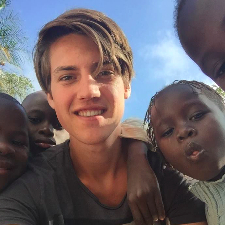

Create chances for underpriviliged in the least developed countries around the globe
Sustainable cooperation with locals
In close cooperation with locals we are able to define their actual needs, and we make sure that the projects we carry out are can be continued locally
Efficiently using the available means
To ensure a maximum output from the input and donations, we aim to use as much locally available means as possible. Furthermore, we evaluate the projects rigorously to lower the overhead costs and see to it that the most impact is achieved
Transparency
Bonfari consists of volunteers that have the best intentions, therefore we are open and honest about our financials. You can find our complete financial statement on this website, if you have questions or suggestions we are eager to hear them.
Projects
Finished and ongoing projects
Lunchstall at the school
Kitchen garden
Library school
Bonfari tours
Electricity school
Shelter Tintinto
Microcedit family Sonko
Brochure Jankuba constructions
Policy
How will we pursue our goals?
Continuity
Every time a volunteer works on a project, he/she is required to identify new possible projects that are in line with the Goal of Foundation Bonfari. Dit zorgt ervoor dat het werk wat we doen duurzaam en maatschappelijk verantwoord blijft. Daarnaast geeft dit de mogelijkheid voor organische groei van de organisatie.
Vrijwilligers
De openstaande projecten kunnen door vrijwilligers opgepakt worden. Hierbij is het de bedoeling dat de vrijwilliger zelf verantwoordelijk is voor de fondsenwerving, in samenwerking met het bestuur. Voor enthousiaste, geschikte vrijwilligers kan Stichting Bonfari dienen als "garantie". Doordat wij (waarschijnlijk binnenkort) een officiële ANBI-stichting zijn, weten sponsors dat hun bijdrage in goede handen is. Door in ontwikkelingslanden lokaal nieuwe projectmogelijkheden te selecteren wordt het risico op "voluntourism" geminimaliseerd. Een fantastische mogelijkheid voor studenten die nuttig vrijwilligerswerk willen doen!
Financiën
Wij hebben geen geheime (financiële) motieven, en proberen met alles wat we doen ons doel na te streven. Daarom doen wij onze boekhouding online, en heeft iedereen die dit wil hier inzicht in.
Sinds 2010 is Susan van der Ploeg, moeder van Frank, actief in Gambia. Ze bouwde in Tintinto een solide uitvalsbasis, zowel materieel als relationeel. Ook deed zij al verschillende projectjes, zie hiervoor de projecten sectie op deze website. Susan zag echter dat er nog veel meer hulp nodig was in Tintinto en de rest van Gambia. Samen met Frank is ze hierover in Gambia gaan brainstormen. Het plan voor een stichting was geboren.
Bestuur
Rogier
Secretaris

Frank
Voorzitter
Simon
Penningmeester
Frank Rutgers, Simon Riezebos en Rogier van der Klauw richten in 2016 Stichting Bonfari op. Het idee voor de stichting is vanuit een praktisch oogpunt ontstaan. Simon wilde graag eind 2016 een aantal maanden vrijwilligerswerk doen, in een derdewereldland. Frank is in verschillende landen in Afrika geweest, waaronder meerdere malen in Gambia. Uit zijn contact met lokale bevolking is gebleken dat in dit land veel ontwikkelingskansen liggen. Hierop is besloten niet een eenmalig project op te starten, maar een platform te creëren waar in toekomst op voortgebouwd kan worden. Rogiers affiniteit met vrijwilligerswerk in combinatie met zijn bedrijfskundige kennis sloten hier erg goed bij aan.
Het bestuur werkt op vrijwillige basis en krijgt geen beloning voor geleverd werk.
Donatie
Helpt u ons kansen creëren in de minst ontwikkelde landen?
Wij halen het maximale uit uw donatie
Uw bijdrage wordt niet ingezet als "beloning" voor bestuurders of vrijwilligers, er worden geen borrels of etentjes van betaald, iedere euro die Stichting Bonfari ontvangt wordt gebruikt in lijn met ons doel.
U kunt ons steunen door over te maken naar NL74 RBRB 0939 7752 47 t.n.v. Stichting Bonfari.
Het is altijd de bedoeling dat voor projecten een deel van de fondsenwerving gedaan wordt door de vrijwilliger die het gaat uitvoeren. Uw bijdrage is echter altijd welkom om delen van grotere projecten te financieren en de vaste kosten van de stichting te dekken. U kunt ook aangeven dat u aan een specifiek project wil bijdragen.
Wilt u belastingvoordeel bij uw donatie? Kijk dan hier.
Neem contact op
Moestuin project
Bescherming gewassen in de moestuin
Het verbouwen van groente in Gambia is op veel plaatsen erg goed mogelijk. Wel moet er rekening gehouden worden met een bijzonder klimaat. Gedurende de regenmaanden valt er erg veel regen, terwijl het in de droge maanden soms weken niet regent en erg warm is. Om kinderen al op jonge leeftijd mee te geven wat de beste manier is om groente te verbouwen, wordt er op de school agricultuur les gegeven. Naast de lessen die de kinderen krijgen in bijvoorbeeld de stikstofcyclus in de natuur, wordt er per klas een moestuin bijgehouden. In deze moestuin leren kinderen over de verschillende gewassen die ze kunnen verbouwen en hoe ze deze gewassen moeten verzorgen.
Op de school in Tintinto is er echter een probleem met de moestuin. Door het zeer lage budget van de school, is er geen mogelijkheid fatsoenlijke omheining aan te leggen rond de tuintjes. Zoals op de foto hierboven te zien is, is er daarom een omheining aangelegd met palmbladeren en stokken uit de buurt, het onderhoud van deze omheining is erg arbeidsintensief. Dit is echter niet het meest vervelende. Omdat de omheining nu volledig van planten is gemaakt, weet het lokale vee hier met regelmaat doorheen te breken. Wanneer dit gebeurt is al het werk van de kinderen voor niets geweest, omdat de dieren alle verbouwde groente opeten.
De oplossing voor dit probleem is relatief simpel, een fatsoenlijke omheining bouwen om de moestuin. De school heeft de wens uiteindelijk rond de gehele school een muur te bouwen, om er zo voor te zorgen dat ze het terrein kunnen afsluiten voor vreemden. Dit is op het moment echter een te omvangrijk project voor de stichting. Omdat de moestuin in een hoek van het terrein ligt, kan wel een begin worden gemaakt met de muur. De twee buitenzijden van de omheining zullen een begin vormen van de buitenmuur, de andere twee zijden zullen gemaakt worden van een goedkoper hek. Op deze manier hoeft de omheining niet te worden vervangen mocht er een muur om de school komen. De moestuin zal uiteindelijk 30 meter bij 30 meter worden. De kosten voor het materiaal voor het maken van de stenen voor de muur zullen ongeveer € 1000,- zijn. De kosten voor het materiaal voor het hekwerk zullen op ongeveer € 500,- uitkomen. Hier komen nog de personele kosten voor het maken van de stenen, het ijzerwerk waarmee de muur moet worden verstevigd en de kosten voor een poort in het hek bij, deze kosten zijn begroot op € 500,-.
Bibliotheek school Sotokoi
Kasten bouwen en Engelse boeken verzamelen.
Geletterdheid heeft directe invloed op onderwijsniveau, werk, inkomen en gezondheid. Om er voor te zorgen dat volwassenen geletterd zijn, wordt er tijdens de opleiding van kinderen veel tijd besteed aan taalontwikkeling. Dit is echter vaak niet genoeg om laaggeletterdheid te voorkomen. In Nederland ben ik, Rogier, al actief als vrijwilliger bij de VoorleesExpress om taalontwikkeling van kinderen te stimuleren. Dit gebeurt onder andere door kinderen met een leerachterstand in contact te brengen met de bibliotheek en ze te laten zien hoe leuk lezen is.
Na gesprekken met het schoolhoofd Mbemba Kinteh in Sotokoi, vernamen wij dat er voor de ongeveer 1200 kinderen op school geen bibliotheek beschikbaar is. Dit betekent dat de scholieren op een cruciaal moment in hun leven geen stimulans hebben om te gaan lezen en naast de reguliere lestijd geen kans hebben om hun taalniveau te ontwikkelen. Om hier verandering in te brengen gaan wij een lege ruimte in de school verbouwen tot bibliotheek en er Engelstalige boeken plaatsen.
Begroting:
............
€1000 totaal
Inkopen hout
............
€ 150
Inkopen staal
............
€ 300
In elkaar zetten
............
€ 100 (+Simon)
Boeken
............
€ 250 Inzamelen via Voorleesexpress en overige instanties, eventueel oude partijen opkopen.
............
Goed scannen of de boeken interessant zijn voor de leeftijdsgroep op de school
Boeken verschepen
............
€ 200 (afhankelijk van hoeveelheid boeken)
*Lokaal wordt er Engels, Mandinka en Fula gesproken, het schoolhoofd heeft aangegeven dat de grootste behoefte de taalontwikkeling in het Engels is.
Elektriciteit school Sotokoi
Stroomvoorziening voor avondlessen en elektronica.
Door stroom te leveren aan de school onstaan er nieuwe mogelijkheden, er kunnen lessen gegeven worden in de avond als het donker is, daarnaast kunnen in de toekomst computers/laptops/tablets gebruikt worden als aanvulling op het huidige lesprogramma.
Opvanghuis Tintinto
Opknappen tijdelijke woonruimte.
Naast het stuk land van de familie van Frank, woonde tot twee jaar terug een Engelsman, David Cooke (Cookie). Cookie is door privéomstandigheden helaas terug verhuist naar Engeland. Omdat dit stuk land op twee kanten grenst aan het stuk land van de familie, is besloten om dit stuk land over te nemen van Cookie. Op het stuk land van Cookie staat een mooi rond huis. Dit huis wordt in het regenseizoen gebruikt om mensen te huisvesten, die door hevige regenval zonder huis zijn komen te zitten. In de maanden mei t/m augustus is de temperatuur erg hoog in Gambia, maar ook vallen in de avonduren erg hevige regenbuien. Door deze hevige regenbuien spoelen soms muren of hele huizen weg. De bewoners van deze huizen zouden normaliter weken zonder dak boven hun hoofd moeten leven, omdat er pas weer stenen kunnen worden gemaakt als het regenseizoen over is. De afgelopen twee regenseizoenen hebben zij echter onderdak gekregen in het oude huis van Cookie. Tot wel 12 mensen sliepen in de twee kamers in het huis. Er zijn jammer genoeg een aantal problemen met het huis van Cookie. Het huis heeft momenteel alleen een dak frame, maar geen dak. Dit betekent dat als hier mensen zitten tijdens het regenseizoen, er een provisorisch dak gemaakt wordt. Daarnaast zitten er wel openingen van ramen in het huis maar zitten hier geen ramen in. Dit betekent dat de mensen die hun huis hebben moeten verlaten, letterlijk van de regen in de drup raken.
Het plan is om een simpel maar duurzaam dak op het huis te zetten. Dit kan gedaan worden door de lokale vakmensen. Daarnaast moeten er ramen gemaakt worden die in het huisje passen, ook dit kan in de buurt van het dorp. De kosten voor het dak worden door de lokale vakmensen geschat op € 1000,=, de kosten voor de ramen zullen € 250,= bedragen.
Wanneer het huis af is, zal het in de regenmaanden mei t/m augustus opengesteld worden voor mensen waarvan het huis is ingestort. Kebe, die op het terrein woont met zijn familie en het terrein bijhoudt en bewaakt, zorgt na het regenseizoen dat het huis weer leeg raakt. Dit om te voorkomen dat mensen het huisje permanent gaan bewonen. Om het huisje toch optimaal te gebruiken, zal het in de zomermaanden gebruikt worden voor de huisvesting van mensen die vrijwilligers werk willen doen in de buurt.
Microkrediet familie Sonko (door Susan)
Koeling en naaimachine.
Amy Sonko is één van de zeven dochter van Yaya Sonko, mijn adviseur en chauffeur als ik in Gambia ben. Amy heeft een opleiding tot kleermaker gevolgd. Toen zij klaar was met haar opleiding wilde ze graag een klein bedrijfje voor zichzelf opzetten. Loondienst bestaat in Gambia niet zoals we het in Nederland kennen. Ze kon wel bij iemand gaan werken, maar dan moet je wel je eigen machine meenemen. Om haar bedrijfje te beginnen had ze eigenlijk maar twee dingen nodig: een naaimachine en stoffen om mee te werken. In Gambia bleken goede Singer naaimachines te koop voor minder dan € 100,= . Op de lokale markten zijn daarnaast tal van stoffen te koop tegen een redelijke prijs.
Met Amy werd afgesproken dat zij een goede naaimachine zou uitzoeken en dat zij zou kijken hoeveel krediet ze nodig had om stoffen te kopen. Uiteindelijk vond ze een goede naaimachine voor € 80,= en leende ze € 30,= om stof van te kopen. De lening van € 110,= is vanaf de eerste keer dat ik terug kwam netjes stapje voor stapje afbetaald. Dit resulteerde erin dat Amy binnen 2 jaar het volledige krediet heeft terugbetaald. Een deel van het geld verzamelde ze via Marjon (een goede vriendin van mij) en mij, ze maakte zakjes en hoesjes voor iPads, die door ons in Nederland werden verkocht. Daarnaast naaide ze schooluniformen voor de lokale kinderen. Via Inge, een Vriendin van mij die coupeuse is, kreeg ze daarnaast een aantal leuke patronen. Deze patronen is zij nu in Gambia aan het maken, waarmee ze een ander aanbod heeft dan de andere coupeuses in haar regio.
Nu werkt Amy nog vanuit het huis van haar ouders. Ze overweegt nu een nieuw microkrediet te vragen om een naaiatelier aan de straat te bouwen, maar weet nog niet of haar inkomsten daar stabiel genoeg voor zijn.
Jankuba constructions
Ontwerpen brochure lokale aannemer.
In februari 2014 ging ik, Frank, voor de tweede keer in mijn leven naar Gambia. Deze keer niet naar een hotel maar in ‘ons’ eigen huisje slapen. Waar de meeste mensen waarschijnlijk een week zonder elektriciteit, stromend water of internet verschrikkelijk zouden vinden, keek ik hier juist heel erg naar uit. Een week in alle rust tussen de lokale bevolking zitten. Eenmaal in Gambia duurde het een paar dagen voordat ik helemaal tot rust was gekomen, lekker uitrusten en van de nieuwe ervaringen genieten. Maar eenmaal gewend in mijn nieuwe omgeving, ging het kriebelen om toch iets te ondernemen.
Jankuba is de aannemer die ons huisje in Gambia heeft gebouwd. Jankuba woont hemelsbreed ongeveer 200 meter van ons vandaan in Gambia. Gedurende de week werden we dan ook uitgenodigd om een hapje te komen eten bij hem thuis. Dit aanbod hebben we natuurlijk niet afgeslagen! Tijdens het eten vertelde Jankuba dat hij moeite had om projecten binnen te halen. Hij had er nu nog voldoende lopen, maar merkte ook dat het binnenhalen van nieuwe projecten steeds moeilijker ging. Voornaamste reden hiervoor is de (oneerlijke) concurrentie van met name Engelse aannemers. Waar Jankuba geen beschikking heeft van kennis of gelden om zichzelf te promoten via flyers of het internet, hebben deze rijke Europeanen dat wel. Sterker nog Jankuba heeft niet eens de beschikking over elektriciteit, laat staan een camera om zijn werk vast te leggen of een computer om promotiemateriaal te maken. Daarop hebben we bedacht om een flyer te maken, om zo duidelijker te kunnen laten zien wat hij allemaal kan maken. De volgende dag zijn we op zijn motor het hele land door gereden om huizen te fotograferen die hij gebouwd heeft. Eenmaal in Nederland ben ik met de foto’s aan de slag gegaan en heb ik het bijgevoegde document voor hem gemaakt.
Het gaat hier om een relatief klein project. Mijn krachten liggen bepaald niet bij het opstellen van dit soort documenten. Maar toch heb ik Jankuba hiermee erg kunnen helpen, door hem als kleine zelfstandige iets op weg te helpen met zijn aannemersbedrijf. Inmiddels is de motor helaas ingeruild voor een auto, dus op een tweede tochtje over de zandpaden in Gambia zal ik waarschijnlijk lang moeten wachten. Maar deze ervaring is wel één van de drijfveren geweest om meer te willen doen in Gambia.
Het resultaat van dit project is de volgende Brochure (PDF).
Datum: Februari 2014
Locatie: Tintinto, Gambia
Marktkraam bij school
Marktkramen waar overdag eten verkocht kan worden.
Waar de meeste scholen in Nederland een kantine hebben, heeft de school in Tintinto een kleine marktplaats naast de school. Wanneer de kinderen pauze hebben komen hier de vrouwen uit het dorp met pannen eten. Er worden verschillende warme gerechten verkocht aan de naar school gaande kinderen. In landen als Gambia is het niet normaal dat kinderen boterhammen mee naar school krijgen, maar dat er ’s middags warm gegeten wordt. Dit eten is erg goedkoop en deze vrouwen verkopen dan ook veel eten elke middag. Er is echter geen geld om een fatsoenlijke plek te maken voor de vrouwen om hun eten te verkopen. Zoals op de foto te zien is hebben de vrouwen met wat palen en golfplaten wel een plekje gebouwd, zodat ze uit de regen kunnen zitten in het regenseizoen.
Mbemba Kinteh, de directeur van de school, gaf tijdens ons bezoek aan dat hij graag een betere plek voor de vrouwen zou maken. Omdat de school per kind gemiddeld slecht €3,= per jaar aan schoolgeld ontvangt, is dit echter niet mogelijk. De vrouwen hebben aangegeven graag een plek te willen waar zij het eten hygiënisch kunnen uitstallen. Daarnaast zou het fijn zijn als er een muurtje komt zodat er niet continue stof in het eten waait.
De kosten die met dit project gemoeid zullen zijn, zijn door Mbemba geschat op € 3500,=. Voor dit bedrag zal er een marktplaats van 20 bij 6 meter worden gebouwd ingelegd met tegels. De kosten zoals begroot door Mbemba zijn als volgt verdeelt:
Begroting:
Cement
............
€ 400
Zand
............
€ 600
Stenen
............
€ 400
Tegels
............
€ 500
Golfplaten
............
€ 250
Hout
............
€ 500
Ijzerwaar
............
€ 200
Transport
............
€ 125
Arbeid
............
€ 400
Zoals op de foto te zien zijn er een aantal zaken al aanwezig, waardoor de kosten zouden kunnen worden gedrukt. Zo zijn er al golfplaten en kan eventueel een deel van het gebruikte hout opnieuw gebruikt worden. In overleg met Mbemba zal bepaald worden of alle bovengenoemde kosten gemaakt moeten worden. In eerste instantie zal vooral de muur van belang zijn, wat +/- € 2000,= zal kosten. Wanneer dit bedrag is gerealiseerd, kan later nog besloten worden of marktplaats in moet worden gelegd met tegels en of er een nieuw dak moet komen.
Bonfari tours
Ondersteunen lokale taxi-onderneming.
Yaya Sonko is al jaren taxichauffeur in Gambia, vanuit zijn woonplaats Brufut rijdt hij klanten tegen een kleine vergoeding (ongeveer € 12,=) de hele dag rond. Als kleinschalige ondernemer is het lastig om nieuwe klanten, voornamelijk toeristen, binnen te halen. Taxichauffeurs staan vaak uren buiten het vliegveld of de hotels te wachten, hopend op nieuwe klanten. Yaya rijdt nu nog in een kleine oude 4x4 met open dak rond, welke binnen afzienbare tijd vervangen zal moeten worden. Echter, door de lage inkomsten heeft hij geen mogelijkheid om te sparen voor een nieuwe auto.
Terwijl Yaya en zijn collega’s uren staan te wachten buiten zien ze wel geregeld bussen vol toeristen de hotels verlaten, om uitstapjes te maken. Steeds meer toeristen willen echter af van de geplande tours in grote bussen, die vaak erg prijzig zijn (tussen €15,= en €35,= per persoon per dag) . Toeristen willen kleinschaliger en flexibeler kunnen reizen. Het is echter lastige voor toeristen om in contact te komen met lokale chauffeurs en in te schatten welke betrouwbaar zijn.
We willen deze twee groepen graag bij elkaar brengen door op te treden als bemiddelaar, onder de naam ‘Bonfari Tours’. Doordat wij lokaal contact hebben met Yaya Sonko en er een vrijwilliger in het dorp aanwezig is (van augustus t/m december 2016), kunnen we het contact bespoedigen en ondersteuning bieden als dat nodig is. Dit stelt Yaya in staat meer klanten te werven en zo op lange termijn beter en constanter in zijn levensonderhoud te kunnen voorzien. Een deel van het geld dat via deze weg binnenkomt zal worden gereserveerd om, wanneer de auto van Yaya het begeeft, een nieuwe auto aan te kunnen schaffen zodat hij niet werkloos wordt.